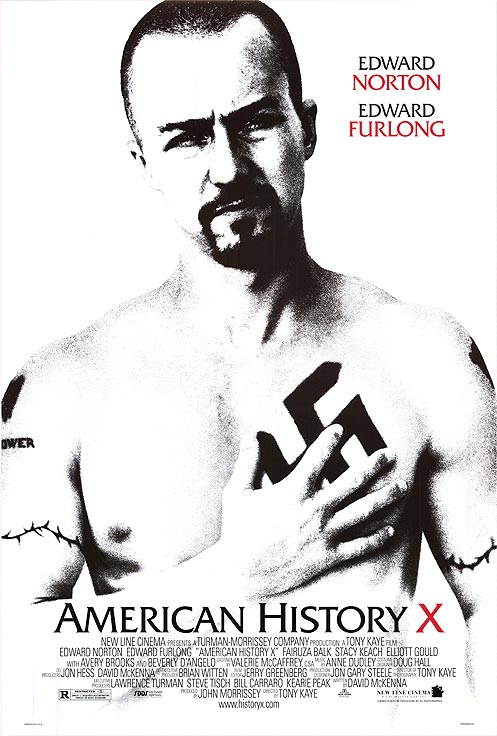

Favourite movies
" ALLIENS
ALLIENSRealize date: 14 October 1994 (USA) Pley is rescued by a deep salvage team during her hypersleep. The moon from the original movie has been colonized, but contact is lost. This time, colonial marines have impressive firepower, but will that be enough? Director: James Cameron Cast: |
Mozart in the jungle Realize date: March 21, 2014 Love, money, ambition and music intertwine in Mozart in the Jungle, a half hour comedic drama that looks at finding yourself and finding love while conquering New York City. A brash new maestro Rodrigo (Gael Garcia Bernal) stirs up the New York Symphony as young oboist Hailey (Lola Kirke) hopes for her big chance. Cast: |
| 
American story X Realize date: 1999,17 july (USA) A former neo-nazi skinhead tries to prevent his younger brother from going down the same wrong path that he did. Cast: |
The Man Who Invented Christmas Realize date: 2017 The journey that led to Charles Dickens' creation of "A Christmas Carol," a timeless tale that would redefine the holiday. Cast: |